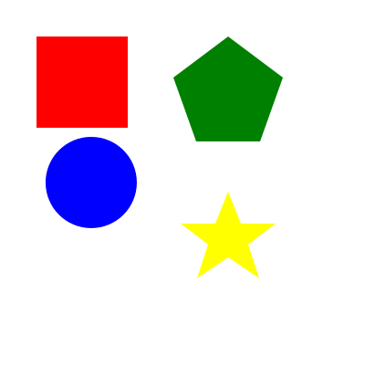

SVG Compression
Hello there! A few days ago someone on Reddit asked about splitting SVG files to make them smaller than 15kb, so they can be uploaded to the internet.
I'll outline a few of the processes I've used in the past with a few tricks I've learned along the way.
Disclaimer: I'm not a graphic designer; I've no experience in most of this outside of GT. I'm just an IT guy who likes making virtual stickers for video game cars.
I might follow up with another episode on livery design later, but to be honest there are better videos on that topic out there already. I'll link them below.
What's an SVG?
What's an SVG? It's a vector image format. It creates an image by combining shapes and lines.
What's a raster image?
What makes up an SVG file?
<svg width="400" height="400" xmlns="http://www.w3.org/2000/svg">
<!-- Red Square -->
<path d="M 40 40 L 140 40 L 140 140 L 40 140 Z" fill="red" />
<!-- Green Pentagon -->
<path d="M 250 40 L 310 85 L 285 155 L 215 155 L 190 85 Z" fill="green" />
<!-- Blue Circle -->
<path d="M 100 250 A 50 50 0 1 0 99.9 250 Z" fill="blue" />
<!-- Yellow Star -->
<path d="M 250 210 L 264 245 L 302 245 L 272 268 L 284 305 L 250 282 L 216 305 L 228 268 L 198 245 L 236 245 Z" fill="yellow" />
</svg>
The spaces and new lines aren't important; they're just there to prettify the code. Each shape has one color. We'll use that feature to split our path layers later.
So you want to make a sticker?
- Source your material. Here's a photo of a juice bottle I had on my desk. We're going to use the logo and surrounding art for our sticker.
Autotracer is a free online image vectorizer. It can convert raster images like JPEGs, GIFs, and PNGs to scalable vector graphics (EPS, SVG, AI, and PDF). No registration or email requi[...]
-
Open Autotracer.org. I'm recommending this as a "quick and dirty," no-t[...]
- Upload a file: Or enter a URL. Max. file size for upload is 6 MB. Supported file types: jpg, png, pdf, jpeg. Max. dimension: 5000x5000.
- Select output format
- Number of colors: Number of colors the image will be reduced to before it is vectorized. Range: 1-256.
- Hide advanced options
- Smoothing
- Despeckle: Active. Removes small elements. Result will be cleaner but less detailed.
- White background: Ignore. White background will not get converted to vector.
The more colors you choose, the more realistic and less posterized the result will appear, but it will increase the file size. Smoothing will impact the level of detail[...]
The resultant SVG has lost some fidelity, but it's still very recognizable. The file is currently 521kb, so we'd need 35 chunks to upload to the GT7 servers.
If we opened the file in a text editor, we see the same format as the example above, just a lot more of them. We have a header and path statements, which now include a fill and stroke s[...]
Before we start slicing up the path statements into chunks, let's try to optimize it first to reduce the file size.
Optimization
My preference for reducing file size is SVGOMG.net.
- Once opened, uncheck the Compare gzipped option, and adjust the Number and Transform sliders until you find the right balance[...]
- Enable Prettify Markup; it will make finding individual paths easier later. Hit the Download button to save the optimized file.
Splitting the SVG
Now you'll want to create little sub-15 kilobyte files.
We'll do this using a script I assembled at https://cianhan.github.io/svgsplit/[...]
- Upload the optimized SVG file you just downloaded from SVGOMG.
- Choose a prefix for the files (I'm using miwadi in my example).
- The tool will tell you how many files have been created, the number of elements, and the average size of the files. You can also see a preview.
- Download and unzip, then upload the SVGs to the GT7 server.
#MakeSomething